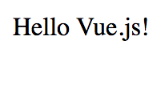

Primeros Pasos
Para comenzar a usar vue, será necesario el uso de sus propias librerías, ya sea npm o añadiendo el script mediante su URL :
https://unpkg.com/vue
Comenzamos mediante un pequeño ejemplo de holamundo: El archivo javascript estará compuesto por una llamada a Vue que manejará el div deseado como si fuese una función de javascript (o un hash en otros lenguajes como ruby). A partir del siguiente html podremos modificar el contenido de su div mediante una función javascript:
<body>
<div id="app">
<p>{{ message }}</p>
</div>
</body>
<script src="https://unpkg.com/vue"></script>
<script src="holamundo.js"></script>
Es importante incluir los scripts al acabar el body
A continuación procedemos a analizar el documento js.
Con la expresión:
"el: '#nombre_del_div'"
seleccionaremos el id que le hemos asignado al div. A continuación podremos asignar un valor mediante su elemento:
"data : {
nombreVariableHTML: 'mensaje'
}
A continuación encontramos el script completo:
new Vue({
el: '#app',
data: {
message: 'Hello Vue.js!'
}
})
Como resultado de la combinación del archivo javaScript y del HTML obtenemos:
